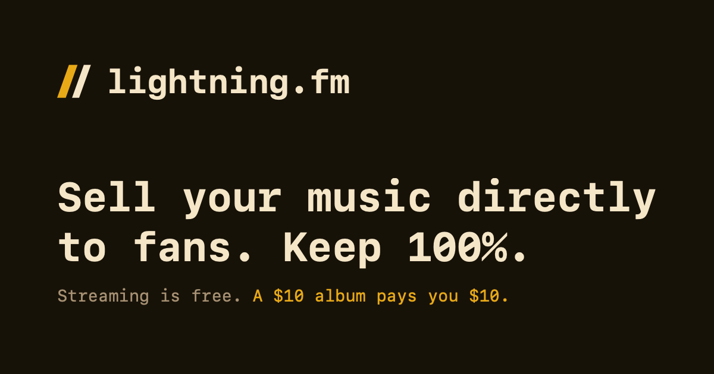
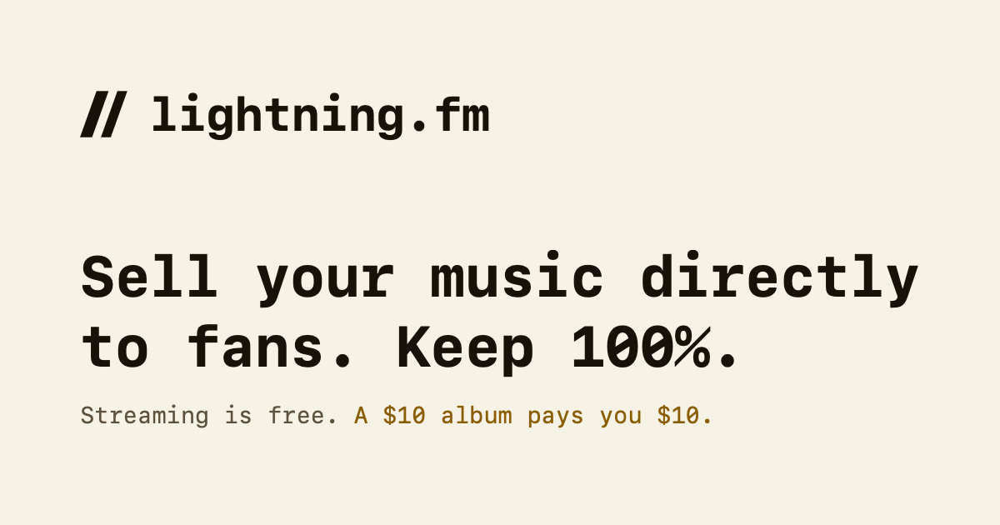

Two slashes, four points each, no curves. The leading stroke is 22 units wide and the trailing one 18, at the same angle — the mark reads as one gesture rather than a repeated shape. Everything below is drawn from that geometry.
On dark, the first slash takes the amber. It is the only place the two-tone version is allowed — it needs the contrast of a dark ground to read as deliberate.
Four approved combinations. Amber is never the mark on a light ground — at #E8A917 it drops to 1.9:1 on cream and disappears.
At 16px the two slashes and the gap between them fall below one pixel and mush into a grey block. The 16px icon is therefore the leading slash alone — same angle, same width, one stroke. The width variation is the first thing lost at that size, so it is not worth faking.
This is the one sanctioned exception to the geometry. Everything from 32px up uses the full mark. Both files are in assets/.


Replaces the current public/og-image.png. Written in dollars rather than sats, per finding 3 of the audit — this image is the first thing a musician sees when the link is shared.
Daylight drops the two-tone mark: amber is never the mark on a cream ground, so both slashes go ink and the accent moves to the price in the tagline. Moonlight is the better default — dark cards hold their edge against both feed backgrounds.
The slant is the whole mark. Once it rotates or stretches, it stops matching the type it sits beside and reads as an accident.
One thing left for a person, not a script: the lockup should be delivered with the wordmark converted to outlines, so it never depends on JetBrains Mono being installed. The mark files above are pure geometry and need nothing.